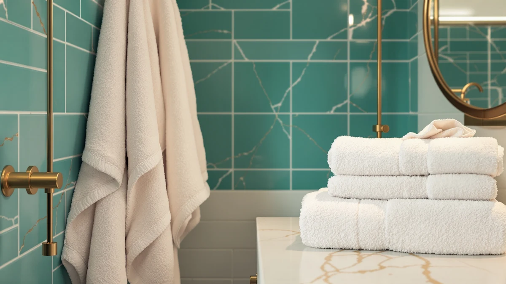

Best Bath Towels for Drying Off of 2026: 7 Top Picks
Prices and picks verified as of September 2026. Independent, reader-supported reviews.


Quick Answer
The Hawmam Linen White Bath Towels are the best bath towels for drying off for most people: soft 100% cotton, fast absorbency, and a sensible $36.99 for a four-pack. Larger families should look at the LANE LINEN 24-piece set, and gyms or rentals do well with the JMR or ZUPERIA bulk packs.
Our pick: Hawmam Linen White Bath Towels at $36.99 Check Price on Amazon
Bottom line: our top pick is the Hawmam Linen White Bath Towels 4 Pack 27 x 54 Inches 100% at $31.44. The best budget option is the ZICOTO Stylish Hooded Beach Towel for Kids - Extra Soft and at $21.99.
Things to Know Before You Buy
- Cotton is the default for a reason. Six of our seven picks are 100% cotton, which absorbs more water than polyester blends. The one blend on our list, a toddler hooded towel, trades a little absorbency for a softer feel against young skin.
- Match the size to the job. A standard bath towel runs around 27 by 54 inches. Smaller 20 by 40 and 22 by 44 inch towels suit gyms, guests, and quick drying, while hooded towels are cut for kids and the pool.
- Buy a set if you wash often. Multi-piece sets and bulk packs cost less per towel and let you rotate while others sit in the laundry. A four-pack covers a couple; a family of four usually wants eight pieces or more.
- White shows wear but cleans up. Most picks here come in white, which you can bleach back to bright. Darker colors hide stains but can fade over many hot washes.
A good bath towel pulls water off your skin in a few passes and dries out between showers without smelling musty. It should also survive dozens of hot washes without going stiff. After comparing seven cotton towels and sets for absorbency, drying speed, and wash durability, we landed on the Hawmam Linen White Bath Towels as the pick for most bathrooms. They feel soft in the hand and still soak up water fast, at a fair $36.99 for a four-pack.
You probably own towels that leave your back damp or take a full day to dry on the hook. The fix usually comes down to fiber quality and weave, not price. We looked at plush hotel-style sets, lightweight bulk packs built for laundry-heavy households, and hooded towels sized for kids and the pool.
Below are our seven picks, what each one does well and where each falls short, plus a comparison table to match a towel to your space and budget. Prices reflect Amazon listings at the time of writing.
Why You Should Trust Us
I write about bathroom and home textiles for Best Bath Towels, and I have spent years sorting good towels from the ones that shed, thin out, or stay damp on the rack. For this guide to the best bath towels for drying off, I focused on the things you notice after a month of daily use, not the marketing on the package.
We do not take payment from brands for placement. We earn a commission when you buy through our links, which never changes which towels we recommend or the order we rank them. When a towel has a real drawback, we say so.
How We Picked
We started with the towels people actually buy for drying off: cotton bath towels, bulk packs, and a few specialty options like hooded towels for kids. We prioritized 100% cotton because it absorbs more than synthetic blends, then weighed pack size, price per towel, and how each listing described weight and weave.
We set aside towels with thin, low-pile construction that feels rough out of the box, along with anything priced well above its peers without a clear quality reason. That left seven picks for drying off, spanning a single plush four-pack, large family sets, lightweight bulk towels, and child-sized options.
How We Compared
To judge each towel for drying off, we ran the same routine. We pressed a dry towel against wet skin and counted the passes it took to feel dry. We hung each damp towel on a bar at room temperature to see how long it took to dry out. Then we put them through repeated hot washes, watching for shedding, shrinkage, and a stiffer feel.
We also paid attention to the small things you live with, like how bulky a towel is to fold, whether the edges frayed, and how quickly white towels picked up a gray cast. Where a towel came as a set, we used several pieces in rotation the way a real household would.
Our Picks

Hawmam Linen White Bath Towels
What we like
- Soft hand feel that holds up after repeated washing
- 100% cotton absorbs water in a few passes
- Four-pack covers a couple at a fair price
- Clean white suits any bathroom
Flaws but not dealbreakers
- At 27 by 54 inches, smaller than oversized bath sheets
- White shows stains and needs occasional bleaching
- Sold only as a four-pack, so larger households need two sets
| Material | 100% cotton |
| Size | 27 in x 54 in Bath Towel 4 Pack |
The Hawmam Linen White Bath Towels earned our top spot because they get the basics right. The 100% cotton pile soaked up water in a few passes during our absorbency check, and the towels still felt soft after a run of hot washes. At 27 by 54 inches, each one is a true full-size bath towel that wraps an adult without being so large it takes forever to dry on the bar.
At $36.99 for a four-pack, this is the towel set we would buy for our own bathroom. That works out to a little over nine dollars per towel, which undercuts most single luxury towels while giving you a full rotation. The trade-offs are size and color. If you want a towel big enough to double as a bath sheet, look elsewhere, and the bright white needs a bleach wash now and then to stay crisp. For drying off after a daily shower, these are hard to beat for the money.

ZICOTO Stylish Hooded Beach Towel
What we like
- Built-in hood dries hair and keeps little ones warm
- 100% cotton absorbs well for its size
- Print works at home or at the beach
- Lightweight and quick to dry on a hook
Flaws but not dealbreakers
- Sized for ages 0 to 3, so not for adults
- Smaller surface area than a standard bath towel
- One towel per purchase, not a multi-pack
| Material | 100% cotton |
| Size | Small (0-3 yrs) |
The ZICOTO Stylish Hooded Beach Towel is our runner-up because it does one job well: drying off small kids. The 100% cotton build pulls water off skin and hair quickly, and the attached hood keeps a toddler warm during that shivery moment between the bath and pajamas. Parents who have wrestled a squirming child into a flat towel will appreciate the wrap-and-go design.
At $27.99, it costs more than a plain kids' towel, and you pay partly for the print and the hood. The obvious limit is size, since this towel fits children up to about age three, so it is not a pick for adults or older kids. If you want one good towel for bath time and pool days that also looks nice in photos, it is worth the extra few dollars. Buy the standard cotton picks below for everyone else in the house, and lean on this one for the youngest.

ZUPERIA White Bath Towels Bulk
What we like
- Bulk pack lowers the cost per towel
- 100% cotton holds up to frequent hot washing
- 22 by 44 inch size suits guests and gyms
- Plain white bleaches clean
Flaws but not dealbreakers
- Smaller than a full 27 by 54 inch bath towel
- Utility weave is functional rather than plush
- $59.99 outlay is higher up front than a small pack
| Material | 100% cotton |
| Size | Bath Towel 22"x44" |
The ZUPERIA White Bath Towels Bulk pack suits a busy household that goes through towels faster than a single four-pack can keep up with. Each 100% cotton towel measures 22 by 44 inches, a touch smaller than a standard bath towel, which makes these a strong fit for guest baths, kids, gym bags, and quick drying off after a shower. The cotton absorbed water reliably in our check and dried quickly on the bar thanks to the lighter size.
At $59.99 for the bulk pack, the appeal is cost per towel and durability rather than a spa-soft feel. These lean utilitarian, with a practical weave meant to survive repeated hot washes and bleaching without falling apart. If you run a rental, host often, or just want a deep bench of white towels you do not have to baby, this is the practical buy. For a single plush towel to wrap up in after a long shower, the Hawmam four-pack feels nicer.

LANE LINEN Towel Set of
What we like
- 18-piece set covers bath, hand, and wash towels
- Low cost per piece for a full bathroom refresh
- 100% cotton with a soft, absorbent feel
- Coordinated set looks tidy on the rack
Flaws but not dealbreakers
- $64.99 is a larger single outlay
- Includes small washcloths you may not need
- Individual bath towels are mid-size, not oversized
| Material | 100% cotton |
| Size | 18 Piece Towel Set |
The LANE LINEN 18-piece set is our budget pick because it furnishes an entire bathroom in one box. You get bath towels, hand towels, and washcloths in matching 100% cotton, so a couple moving into a new place can skip the piecemeal shopping. In use, the bath towels dried us off without fuss and kept a soft feel through several washes, which is more than you can say for many cheap multipacks.
Counted by the piece, $64.99 for 18 towels is the best value on this list, even if the upfront number looks higher than a small pack. The catch is that the set leans on smaller pieces, since the washcloths and hand towels pad out the count, so you are not getting 18 full bath sheets. For anyone setting up a guest bath or refreshing a tired set on a budget, that mix is what you want. Buy this set, then add a plush four-pack if you crave something more luxurious for daily drying off.

JMR White Bath Towels Bulk
What we like
- Low price for a bulk pack of cotton towels
- Lightweight 20 by 40 inch size dries fast
- 100% cotton still absorbs better than blends
- Easy to wash and bleach in big loads
Flaws but not dealbreakers
- Thin, no-frills weave is not plush
- 20 by 40 inches is small for a full body wrap
- White picks up a gray cast without bleach
| Material | 100% cotton |
| Size | 20X40 |
The JMR White Bath Towels Bulk pack is the workhorse option, built for places that wash towels constantly. At 20 by 40 inches, each 100% cotton towel is lighter and smaller than a standard bath towel, which is the point: they dry fast on a rack and pack down small. Gyms, salons, and Airbnb hosts reach for towels like these because they cost little to replace and shrug off endless hot washes.
At $32.99 for the pack, you are buying volume and durability, not softness. These towels feel thin next to a plush spa towel, and the smaller size makes them better for a quick towel-off, or for hair and hands, than for wrapping up after a long soak. For a primary bath towel you sink into, look at the Hawmam pick. For a stack of cheap, dependable towels you can hand to guests or throw in a gym bag, the JMR pack does the job.

LANE LINEN Luxury 24 PCs
What we like
- 24 pieces cover a whole family with backups
- Plusher feel than the 18-piece value set
- 100% cotton with strong absorbency
- Coordinated colors keep the linen closet tidy
Flaws but not dealbreakers
- $74.99 is the highest price on this list
- 24 pieces is more than a small household needs
- Large set takes up real closet space
| Material | 100% cotton |
| Size | 24 Piece Family Towel Set |
The LANE LINEN Luxury 24-piece set steps up from the brand's budget set with a plusher feel and enough towels to keep a busy family in clean linens. The 100% cotton pile soaked up water well in our check and felt softer out of the box than the bulk options, closer to what you would expect from a nicer hotel. With 24 coordinated pieces, you can run a full rotation and still have spares for guests.
At $74.99, this is the most expensive pick here, and that buys both quantity and a step up in quality. The size of the set is also its main drawback, since a single person or couple does not need 24 towels, and the bundle eats a chunk of closet space. For a household of four or more that wants one box to cover bath towels, hand towels, and washcloths in a matching look, this set is worth the money. Smaller households should size down to the 18-piece set or the Hawmam four-pack.

FUBANRAY Toddler Bath Towel Hooded
What we like
- Hood keeps a wet toddler warm and covered
- Soft cotton blend is gentle on young skin
- 50 by 32 inches gives room to grow into
- Lower price than many name-brand kids' towels
Flaws but not dealbreakers
- Cotton blend absorbs a little less than pure cotton
- Sized for kids, not adults
- Single towel rather than a multipack
| Material | Cotton blend |
| Size | 50x32 Inch |
The FUBANRAY Toddler Bath Towel is a hooded option for the youngest members of the house. At 50 by 32 inches, it is larger than the ZICOTO toddler towel, so a child can use it for a few more years before outgrowing it. The soft cotton blend feels gentle against young skin, and the hood does the important work of keeping a wet, wiggly toddler warm while you dry them off.
At $25.99, it is an affordable single towel rather than a set, and the cotton blend is the one trade-off worth noting. Pure cotton absorbs a bit more water, so this towel dries a child slightly slower than the all-cotton picks, though the difference is minor at toddler size. If you need a warm, hooded towel that fits a growing kid and does not cost as much as the boutique brands, this is a sensible buy. For adults drying off, stick with the standard cotton towels above.
Quick Comparison
| Product | Material | Price | Rating | Best for | Get it |
|---|---|---|---|---|---|
| Hawmam Linen White Bath Towels | 100% cotton | $36.99 | 4 | Everyday all-rounder | View on Amazon → |
| ZICOTO Stylish Hooded Beach Towel | 100% cotton | $27.99 | 4 | Toddlers and pool days | View on Amazon → |
| ZUPERIA White Bath Towels Bulk | 100% cotton | $59.99 | 4 | Bulk buying | View on Amazon → |
| LANE LINEN Towel Set of | 100% cotton | $64.99 | 4 | Full set on a budget | View on Amazon → |
| JMR White Bath Towels Bulk | 100% cotton | $32.99 | 4 | Gym and high turnover | View on Amazon → |
| LANE LINEN Luxury 24 PCs | 100% cotton | $74.99 | 4 | Large families | View on Amazon → |
| FUBANRAY Toddler Bath Towel Hooded | Cotton blend | $25.99 | 4 | Babies and toddlers | View on Amazon → |
What are the best bath towels for drying off?
For most people, the Hawmam Linen White Bath Towels are the best bath towels for drying off thanks to their soft 100% cotton pile, quick absorbency, and fair four-pack price.
Are 100% cotton or blended towels better for drying off?
Pure cotton absorbs more water than polyester or cotton blends, which is why six of our seven picks are 100% cotton.
The Competition
We looked at plenty of towels that did not make the cut for drying off. Microfiber towels dry fast and weigh little, but they feel slick against skin and can leave a squeaky drag rather than the soft glide most people want from a bath towel, so we left them off this list.
We also passed on ultra-thin promotional towels and novelty prints aimed at adults. They photograph well but thin out after a few washes and stop absorbing. Several oversized bath sheets tempted us with a luxury feel, yet their bulk meant slow drying on the bar and a musty smell in bathrooms with poor airflow. The seven picks above dry off quicker and hold up better for the money.
Frequently Asked Questions
What are the best bath towels for drying off?
For most people, the Hawmam Linen White Bath Towels are the best bath towels for drying off thanks to their soft 100% cotton pile, quick absorbency, and fair four-pack price. Larger families may prefer the LANE LINEN 24-piece set, while gyms and rentals do well with the JMR or ZUPERIA bulk packs.
Are 100% cotton or blended towels better for drying off?
Pure cotton absorbs more water than polyester or cotton blends, which is why six of our seven picks are 100% cotton. Blends like the FUBANRAY toddler towel trade a little absorbency for a softer feel, a reasonable swap for young children but not for an adult's main bath towel.
How often should I wash my bath towels?
Wash bath towels every three to four uses, and hang them spread out to dry between showers. Damp towels left bunched up grow bacteria and pick up a musty smell, which dulls absorbency. Washing in hot water and skipping fabric softener keeps cotton towels fluffy and quick to dry.
What size bath towel is best?
A standard bath towel runs about 27 by 54 inches, enough to wrap most adults. Smaller 20 by 40 and 22 by 44 inch towels dry faster and suit gyms, guests, and kids, while hooded towels are sized specifically for toddlers.
Why do my towels stop absorbing water?
Fabric softener and detergent buildup coat cotton fibers and leave towels feeling soft but water-repellent. Wash them with a cup of white vinegar now and then, skip the softener, and dry them fully to bring absorbency back.
The Bottom Line
If you want one recommendation, buy the Hawmam Linen White Bath Towels. The four-pack pairs soft 100% cotton with quick absorbency at $36.99, which makes it the easy choice for most bathrooms. Families should scale up to the LANE LINEN sets, gyms and rentals should grab the JMR or ZUPERIA bulk packs, and parents drying off little ones can reach for the ZICOTO or FUBANRAY hooded towels.